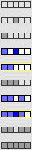
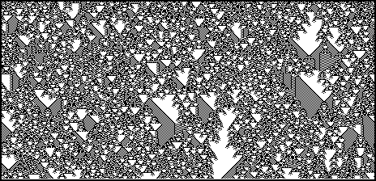

| Class IV: Complex Patterns grow in a complicated way, with both local stable behavior (acting as memory) and long-range correlations (acting to transmit data). In the first, the checkerboard background pattern is the memory; in the second it is the background pattern of vertical lines. |  |  |
Return to Classifying cellular automata.